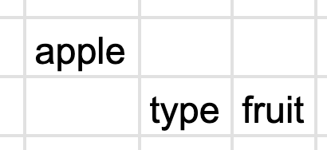
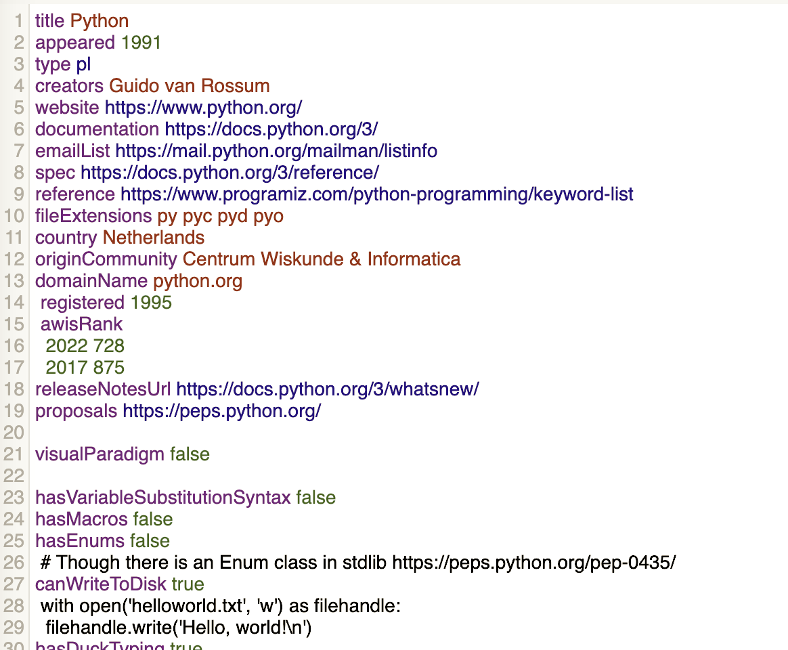
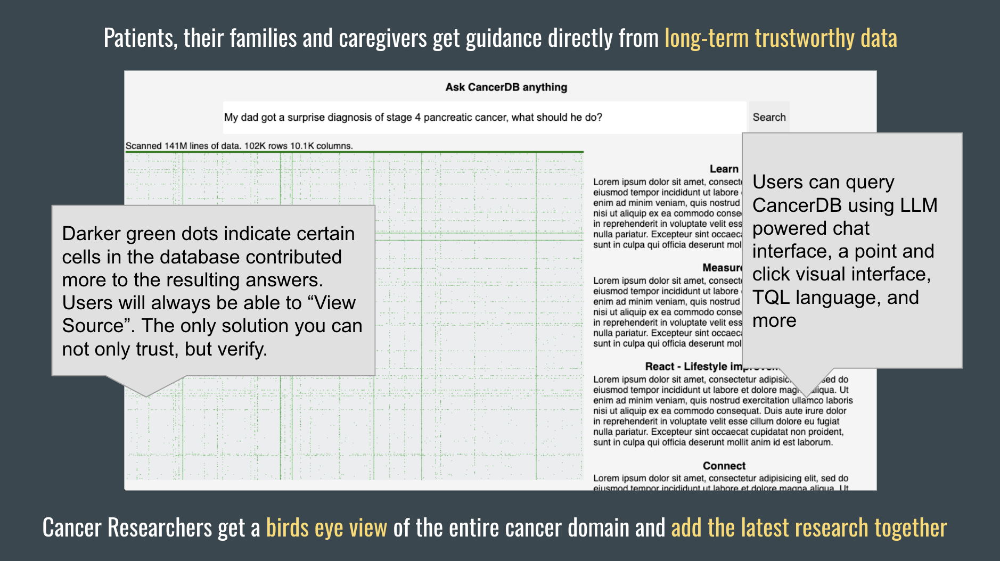

December 22, 2023 — I thought we could build AI experts by hand. I bet everything I had to make that happen. I placed my bet in the summer of 2022. Right before the launch of the Transformer AIs that changed everything. Was I wrong? Almost certainly. Did I lose everything? Yes. Did I do the right thing? I'm not sure. I'm writing this to try and figure that out.
Leibniz is probably my favorite thinker. His discoveries in mathematics and science are astounding. Among other things, he's the thinker that first discovered Binary Notation--that ones and zeros are all you need to represent all numbers and symbols. In my opinion this is perhaps the most beautiful idea in the world. As a kid I grew up surrounded by magical devices and to learn that all this complexity is built on top of the simplicity of ones and zeroes still makes me mutter "wow". Simplicity and complexity in harmony. What makes Leibniz stand out more to me is not just his discoveries but how what he was really after was searching for the symbolic language of God.
I wanted to be like Leibniz. Leibniz had extreme IQ, work ethic, and ability to take intellectual risks. Unfortunately I have only above average IQ and inconsistent work ethic. If I was going to invent something great, it would have to be because I took more risks and somehow got lucky.
Eventually I got my chance. Or at least, what I took to be my chance.
Computers ultimately operate on instructions of ones and zeroes, but those that program computers do not write in ones and zeroes. They did in the beginning, when computers were a lot less capable. But then programmers invented new languages and programs that could take other programs written in these languages and convert them into ones and zeroes ("compilers").
Over time, a common pattern emerged. In addition to everything being ones and zeroes at some point, at some point everything would also be "trees" (simple structures with nodes and branches). Binary Notation can minimally represent every concept in ones and zeroes, was there some minimal notation for the tree forms of concepts? And if there were, would that notation be mildly interesting, or somehow really powerful like Binary Notation?
This is an idea I became obsessed with. I came across it by chance, when I was still a beginner programmer. I was trying to make a programming language as simple as possible and realized all I needed was enough syntax to represent trees. If you had that, you could represent anything. I then spent years trying to figure out whether this minimal notation was mildly interesting or really useful. I tried to apply it lots of problems to see if it solved anything.

If your syntax can distinguish symbols and define scopes you can represent anything.
One day I imagined a book. Let's call it The Book. It could be billions of pages long. It would be lacking in ornamentation. The first line would be "0". The second line would be "1". You've just defined Binary Notation. You could then use those defined symbols to define other symbols.
In the first ten pages you might have the line "8 1000" to define the decimal number 8. In the first thousand pages you might have the line "A 65" to define the character "A" in decimal. In the first ten thousand pages you might have the word "apple", and in the first ten million you might have defined all the molecules that are present in an apple.
The primary purpose of The Book would be to provide useful models for the world outside The Book. But a lot of the pages would go to building up a "grammar" which would dictate the rules for the rest of the symbols in The Book and connect concepts together. In a sense the grammar compresses the contents of The Book, minimizing not the number of bits needed but the number of symbols needed and the entropy of the spaces on the pages that hold the symbols, and maximizing the comparisons that could be made between symbols.
The Book would be an encyclopedia. But it wouldn't just list concepts and their descriptions in a loosely connected way. It would build up every concept, so you could trace all of the concepts required by any other concept all the way down to binary. Entries would look so simple but would abide by the grammar and every word in every concept would have many links. You would not only have definitions of every concept, but comparability would be maximized. Wikipedia does a remarkable job of listing all the concepts in a space. But comparability is nowhere near maximized.
It wasn't the possibility of having a billion page book that excited me. It is what The Book could power. You would not generally read The Book like an encyclopedia, but it would power an expert you could query.
What is an expert? An expert is an agent that can take a problem, list all the options, and compare them in all the relevant ways so the best decision can be made. An expert can fail if it is unaware of an option or fails to compare options correctly in all of the relevant ways.
Over the years I've thought a lot about why human experts go wrong in the same way over and over. As Yogi Berra might say, "You can trust the experts. Except when you can't". When an expert provides you with a recommendation, you cannot see all the concepts the expert considered and comparisons the expert made. Most of the time it doesn't matter because the situation at hand has a clear best solution. You can greatly reduce the odds of an innocent mistake by getting multiple opinions. But sometimes you are dealing with a problem with no standout solution. In these cases biased solutions flood the void. You can shuffle from "expert" to "expert", hoping to find "the best expert" with a standout solution. But at that point you probably won't do better than simply rolling a dice. No one is an expert past the line of what is known. The problem is it impossible to see where that line is. But if we could actually make something like The Book, the best expert could be a digital one, which would show not only all the important stuff we know, but also show what we don't know.
In addition to powering AI experts that could provide the best guidance, The Book could aid in scientific discoveries. Anyone would be able to see the edge of knowledge in any domain and know where to explore next. Because everything would be built in the same universal computable language, you could do comparisons not only within a domain, but also across domains. Maybe there are common meta patterns in diverse symbolic domains such as physics, watchmaking, and hematology that are undiscovered but would come to light in this system. People who had good knowledge about knowledge could help make discoveries in a domain they knew little about.
I was extremely excited about this idea. It was just like my favorite idea--Binary Notation--endless useful complexity built up from simplicity. We could build digital experts for all domains from the same simple parts. These experts could be downloadable and available to everyone.
Imagine how trustworthy they would be! No need to worry about hidden biases in their answers--biases are also concepts that can be measured and would be included in The Book. No "blackbox" opaque collections of trained matrices. Every node in these AIs would be a symbol reviewable by humans. There would be a massive number of pages in these collections, to be sure, but you would almost always query it, not read it.
The pieces would almost lock in place because each piece would influence constraints on other pieces--false and missing information would be easy to identify and fix.
Again, it was like Wikipedia but written in a highly computable, more objective language to maximize comparability.
This was a vague vision at first. My ends wasn't actually a book but the idea was something like The Book could power an AI expert. I was playing with all the AIs at the time and tried to think backwards from the end state. What would the ideal AI expert look like?
Interface questions aside, it would need two things. It would need to know all the concepts and maximize comparability between them. But for trust, it would also need to be able to show that it has done so.
In the long run I thought that the only way to absolutely trust an AI expert would be if there were an human inspectable knowledge store behind it—a massive computable encyclopedia—something like The Book.
My idea was still a hunch, not a proof, and I set out building prototypes.
I tried a number of times to build things up from "0 1". That went nowhere. It was very hard to find any utility from such a thing or get feedback on whether one was building in the right direction. It was a doomed approach.
By 2020 I had switched to trying to make something high level and useful from the beginning. There was no reason this massive Book had to be built in order. We had decimal long before we had binary, even though the latter is more primitive. The later "pages" are generally the ones where the cutting edge stuff would be. So pages 10 million to 11 million could be created first by practitioners, with any many words typed as "any", and earlier sections filled in by logicians and ontological engineers.
It was also clear that many AIs could be built independently, in a federated fashion and easily merged later into one bigger AI. The Tree Notation and Tree Algebra would enable this merging so the sum would be greater than the parts. Imagine putting one book on top of another. Nothing happens. But with this system, you could merge the two and there would be many many new "synapses" connecting the words in each. The resulting combination would be smaller, smarter, and more efficient. You could build "The Book" by building smaller books and combining them together.
With this strategy I made a prototype called "TreeBase". I described it like so: "Unlike books or weakly typed content like Wikipedia, TreeBases are computable. They are like specialized little brains that you can build smart things out of." Unfortunately, it was slow and didn't scale.
Fast forward a couple of years, and Apple came out with much faster computers. Suddenly my TreeBase prototype actually started to work.
I used TreeBase to to make "PLDB", a Programming Language DataBase. This site was an encyclopedia about programming languages. It was the biggest collection of data on programming languages, which was gathered over years by myself and open source contributors and reviewed by hand.

Part of the "Python" entry in PLDB. The focus is on computable data rather than narratives.
As a programming enthusiast I enjoyed the content itself. But to me the more exciting view of PLDB was as a stepping stone to the bigger goal of creating a new kind of encyclopedia that could power AI experts for any domain.
PLDB was met with a good reception when I launched it last summer. After years of tinkering, my dumb idea seemed to have potential! More and more people started to add data to PLDB and get value from it. I enjoyed working on it very much and thought of just keeping it as a hobby and not pursuing the larger AI expert vision.
But part of me couldn't let that big idea go. Part of me saw PLDB as just pages 10 million to 11 million in The Book. Part of me believed that the simple system used by PLDB, at scale, would lead to the emergence of brilliant new AI experts.
I understand how naive this idea is. Simply by adding more and more concepts and measurements in this simple notational system one would develop a digital AI expert that would lead to breakthroughs! It is very hand wavy! I had no proof that getting information into this form at scale would lead to emergent benefits. It just felt like it would, from what I had seen in my prototypes.
Where would the emergent benefits come from in my system that wouldn't come from traditional technologies? My hunch was that once you got information into a certain natural form, there would be a natural algebra that you could then apply to unlock significant value. This would catapult this idea from mildly interesting to world changing.
It was simple enough to keep growing PLDB slowly and steadily but it could be a decade of grinding before I could build a dataset 1,000x bigger and see if my hypothesized emergent benefits appeared. Was there a way I could move faster?
I then had an idea. I had worked in cancer research for a few years and knew there was support for breakthrough ideas. Instead of focusing on PLDB, building an expert AI for a niche audience, why not build CancerDB, building an expert AI for a domain that affects everyone in a life and death matter? Both required building the same core software, but it seemed like it would be 1,000x easier to get a team and resources to build an expert AI to help solve cancer rather than just improve programming languages.
Once the CancerDB idea got in my head it was hard to shake. I felt in my gut that my approach had merit. And if it worked anywhere, it would work everywhere, including cancer research. How could I keep moving slowly on this idea if it really was a way to create digital AI experts that could help save people's lives? I started feeling like I had no choice.
I decided to go for the big idea. The probability of success wasn't guaranteed but the value if it worked was so high that the bet just made too much sense to me.

A slide from my pitch deck explaining how these AI experts would be transparent and trustworthy to users and provide researchers with a birds-eye view of all the knowledge in a domain.
Unfortunately, my execution was abysmal. Ironically, I knew this was a likely outcome. I knew my own limitations. I tried as best as I could to hype the idea and hoped some other group would see it and build it on their own. But when that didn't happen, I felt compelled to press on and lead it myself.
I ran into fierce opposition to my efforts that I never expected. Ultimately I would not have the team or resources needed to build one of these databases 100x bigger than the one I had, and would not be able to test empirically whether my expert AI worked. That meant my only chance was to make a better hypothetical case. I needed to find the algebra that would show why this system would work.
Unfortunately, as hard as I pushed myself—and I pushed myself to an insane degree—I would not find it. Like an explorer searching for the mythical fountain of youth, I failed to find my hypothesized Tree Algebra.
I failed to build a worthwhile second TrueBase. Heck, I even failed to keep the wheels running on PLDB. And because I failed to convince better resourced backers to fund the effort and funded it myself, I lost everything I had, including my house, and worse.
The breakthroughs in deep learning this year have made me significantly less confident in my approach. I recently read a quote by Ilya Sutskever "don't ever bet against deep learning". Now you tell me! I wish I had found that quote years ago, printed it, and framed it on my wall. In many ways I was betting against deep learning. I was betting that curated knowledge bases built by hand would create the best AI experts. The reason why they hadn't yet was that they lacked a few new innovations like the ones I was developing.
Now I question much of what I once believed.
First, there is no reason that knowledge has to be encoded in symbols. Symbols are powerful because they can be shared across time and place, but what ultimately matters is not whether the symbols exist, but whether the skills explained by the symbols are embedded in the blackbox neural networks that are human brains. Symbols can aid learning but the learning is the most important thing. Symbols are just a means to an end. Knowing how to ride a bike is the ends—the knowledge somehow embedded in your neural blackbox—a book on how to ride a bike cannot be more valuable than the blackbox weights themselves.
Second, there is no reason that symbols have to have an atomic canonical form. If ultimately what matters is that the knowledge is embedded, than how it is stored is not relevant. Concepts don't have to be stored in discrete nodes. They can be stored in superpositions. That could be a more efficient and potentially even truer representation of the concept itself.
The returns on improving symbolic systems are also capped by human biology. Even if you improved the efficiency of knowledge bases by a large amount, human brains would still be only able to process a minuscule fraction of all knowledge. Blackbox trained neural networks don't have biological caps. The upside to better symbolic systems is capped. The upside to better brains is uncapped.
The opaqueness of blackbox neural networks can be addressed. There could be inspector neural networks that examine the neural networks. These inspector networks will be able to explain the logic behind another's responses or actions. It might not be a deterministic explanation but it would be arguably better than what we have today. When you ask a question to a human expert today, there is no way to audit their answer. It comes from a blackbox. Future neural networks will likely also maintain access to their training data, so could better explain their answers and be less likely to make mistakes.
Is there any merit to my approach?
If there actually were an algebra that provided an advantage and we discovered it, then perhaps it would be a way to build expert intelligences without giving control over to this new species.
You cannot discover new lands if you don't risk it all and go over the horizon.
I had a hunch that there was something important in this direction, but it was over the horizon. Some
I pushed myself over the edge of the horizon.
I would have much rather someone else did that. I tried for years to get other people to take a look.
Nowadays I am far less confident in my hunch.
2 components: the content itself, and then the meta algebra.
I was building a mini brain
But I did not have the resources I needed to really push this idea.
Consensus. Emerge. Evolution. Flexibility would be paramount.
New entries would both follow existing rules and could also define new rules.
What this would be is not just a book. But a brain. Computable. A network of symbols. A digital expert.
The ultimate structure Before All of these languages
I greatly
Symbols have the advantage of not dying.
And Symbols can be shared spatially as well.
And symbols can be duplicated.
I thought we could build neural networks by hand. I thought it would be suprisingly simple, that intelligence would emerge.
I thought I was close to discovering the key unit of the assembly of ideas.
2017: "The simplest 2D text encodings for neural networks will be TLs."
2020: "Unlike books or weakly typed content like Wikipedia, TreeBases are computable. They are like specialized little brains that you can build smart things out of."
Semantics would emerge. I thought there would be a Tree Notation Algebra. A set of algorithmns and tricks. I couldn't find it. I thought put enough data in this form and someone would.
Binary Notation was mildly interesting to world changing with the invention of Boolean Algebra and .
Ask questions like "what were the necessary technological developments needed to cure diabetes?"
https://sci-hub.ru/https://doi.org/10.1038/mp.2016.184
Mice lacking DIX domain containing-1 (DIXDC1), an intracellular Wnt/β-catenin signal pathway protein, have abnormal measures of
anxiety, depression and social behavior. Pyramidal neurons in these animals’ brains have reduced dendritic spines and
glutamatergic synapses. Treatment with lithium or a glycogen synthase kinase-3 (GSK3) inhibitor corrects behavioral and
neurodevelopmental phenotypes in these animals. Analysis of DIXDC1 in over 9000 cases of autism, bipolar disorder and
schizophrenia reveals higher rates of rare inherited sequence-disrupting single-nucleotide variants (SNVs) in these individuals
compared with psychiatrically unaffected controls. Many of these SNVs alter Wnt/β-catenin signaling activity of the neurally
predominant DIXDC1 isoform; a subset that hyperactivate this pathway cause dominant neurodevelopmental effects. We propose
that rare missense SNVs in DIXDC1 contribute to psychiatric pathogenesis by reducing spine and glutamatergic synapse density
downstream of GSK3 in the Wnt/β-catenin pathway.
Each word represents a specific instance of a type(s).
Show how many of those types there are near each word.
ID#/OutOfKnown/EstimatedTotal
Mice (Mammal/123/6400/7000) lacking DIXDC1 (HumanProtein/4343/25323/500000), a protein in the intracellular Wnt/β-catenin signal pathway family (IntraCellularPathways/23/65/130), have abnormal measures of anxiety (MentalDisorders/12/555/1200), depression (MentalDisorders/12/555/1200), and social behavior (MentalDisorders/12/555/1200). Pyramidal neurons (NeuronType/45/123/650|HumanCellType/234/2800/5000) in these mice's brains (Organs/3/78/80) have reduced dendritic spines (NeuronalComponent/12/23/234) and glutamatergic synapses (NeuronalComponent/45/23/234). Treatment with lithium (WHOEssentialMedicines/343/460/460) or a glycogen synthase kinase-3 inhibitor (MedicineTypes/233/114334/1000000) corrects behavioral (PhenotypeCategories/1/46/100) and neurodevelopmental phenotypes (PhenotypeCategories/2/46/100) in these animals. Analysis of DIXDC1 in over 9000 cases of autism (MentalDisorders/13/555/1200), bipolar disorder (MentalDisorders/43/555/1200) and schizophrenia (MentalDisorders/122/555/1200) reveals higher rates of rare inherited sequence-disrupting single-nucleotide variants (SNVs) (GeneticMutations/12/555/1200) in these individuals compared with psychiatrically unaffected controls. Many of these SNVs alter Wnt/β-catenin signaling activity (IntracellularActivities/12/555/1200) of the neurally predominant DIXDC1 isoform (DIXDC1Isoforms/1/12/20); a subset that hyperactivate this pathway cause dominant neurodevelopmental effects (DevelopmentAffects/5/55/120). We propose that rare missense SNVs in DIXDC1 contribute to psychiatric pathogenesis by reducing spine and glutamatergic synapse density downstream of GSK3 in the Wnt/β-catenin pathway.
In the short run people might prefer a blackbox AI that performed better. However, I couldn't envision a scenario where performance differences could not be overcome. Thus, all else being equal a transparent AI would be preferred. The best AI would rely on some accurate, minimal and understandable encoding of every concept. I had just the thing for that! So, with this future vision in mind, I wrote in a 2017 paper "the simplest 2D text encodings for neural networks will be TLs" (TLs as an abbreviation for Tree Languages--languages recursively built up on Tree Notation).
I thought the algebra was right around the corner. If only I could convince some smarter people to start looking, someone would find it. And we would be off to the races with digital AI experts backed by understandable AIs built up by hand by human experts. I thought this would help accelerate and democratize research.
Just like Binary Notation becomes incredibly powerful once you add Boolean Algebra, I hypothesized someone would discover a Tree Algebra which would make computing over such a book straightforward and powerful.
So it would need to rely on an up to date store of knowledge that would be both computable and human readable. I reasoned that an AI backed by such a store had to be strictly superior to one that wasn't. The blackbox AI would not be able to show the logic behind its answer. It would not be possible to inspect everything the AI knows and does not know. And if a blackbox AI could come up with better answers to someone's questions, that would just mean something was missing from the knowledge store or collection of Tree Algebra algorithms. In the long run I deduced the transparent, knowledge base backed AI experts would beat blackbox AIs.